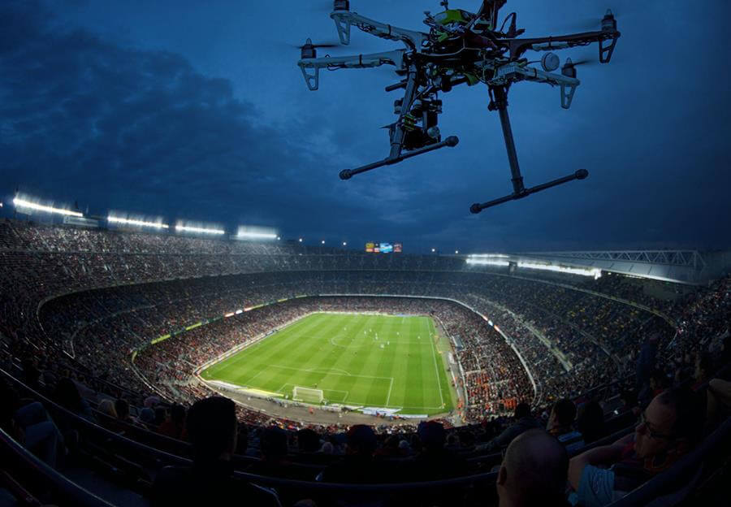
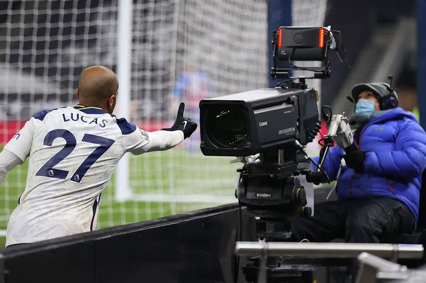

The quality of football footage in the modern day is extremely high, and its very easy to watch - but how are football games filmed so well?
Most high-tier football matches are filmed by numerous drones - some are set for long range shots while some fly just a few dozen feet above the players. The drones produce incredible cinematic views of the game, and also contribute to the Virtual Assistant Referee system, which decides major referee decisions analytically.
Other than drones, at least 16 cameras are set in stadiums for games at the UEFA Champions League, each of which are constantly upgraded to reach the highest quality footage possible.
In general, paying a film crew to record any match with regular quality costs about $300 per game - some clubs spending over $40,000 per season on such services, but on the other hand, filming of top-tier professional matches may cost millions per season!


Live Streams
New transmission systems have allowed the live streaming of football matches to be shown with very little delay.
In 2019, you could expect around 40-50 seconds of delay between an actual event and its live broadcast. By 2021, that number jumped to 4-10 seconds!
Live broadcasts of matches go through a multi-step process, having to be recorded, transmitted through a communications centre, and pushed to a viewer - so the speed at which the viewer can recieve the footage is incredible!